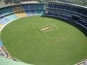

Cricket is a bat-and-ball game played on a cricket field (see image, right) between two teams of eleven players each.[58] The field is usually circular or oval in shape and the edge of the playing area is marked by a boundary, which may be a fence, part of the stands, a rope, a painted line or a combination of these; the boundary must if possible be marked along its entire length.[59]
In the approximate centre of the field is a rectangular pitch (see image, below) on which a wooden target called a wicket is sited at each end; the wickets are placed 22 yards (20 m) apart.[60] The pitch is a flat surface 3 metres (9.8 ft) wide, with very short grass that tends to be worn away as the game progresses (cricket can also be played on artificial surfaces, notably matting). Each wicket is made of three wooden stumps topped by two bails.[61]
The pitch is marked at each end with four white painted lines: a bowling crease, a popping crease and two return creases. The three stumps are aligned centrally on the bowling crease, which is eight feet eight inches long. The popping crease is drawn four feet in front of the bowling crease and parallel to it; although it is drawn as a twelve-foot line (six feet either side of the wicket), it is, in fact, unlimited in length. The return creases are drawn at right angles to the popping crease so that they intersect the ends of the bowling crease; each return crease is drawn as an eight-foot line, so that it extends four feet behind the bowling crease, but is also, in fact, unlimited in length.